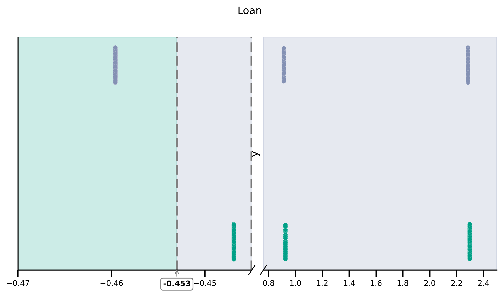
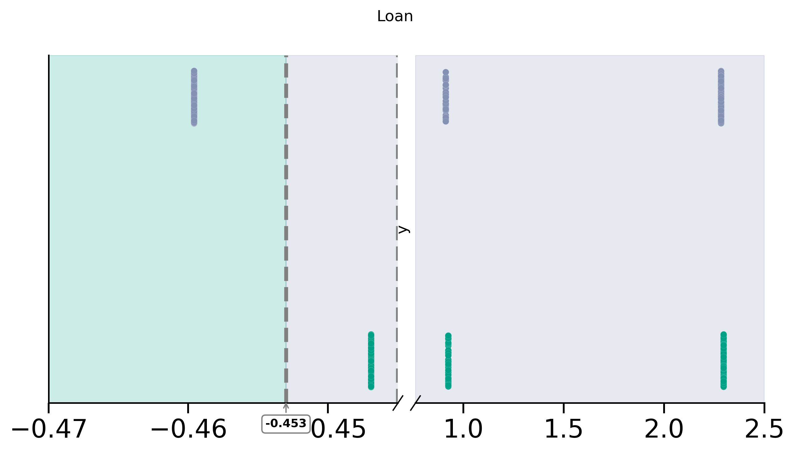
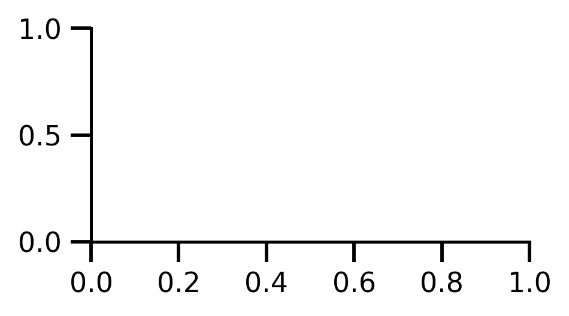
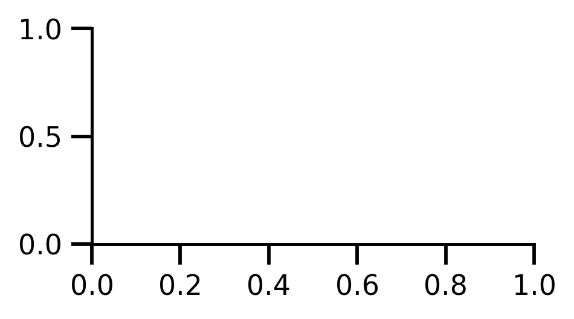
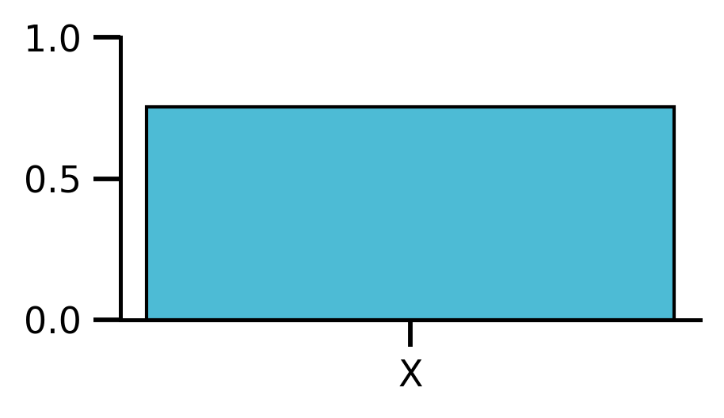
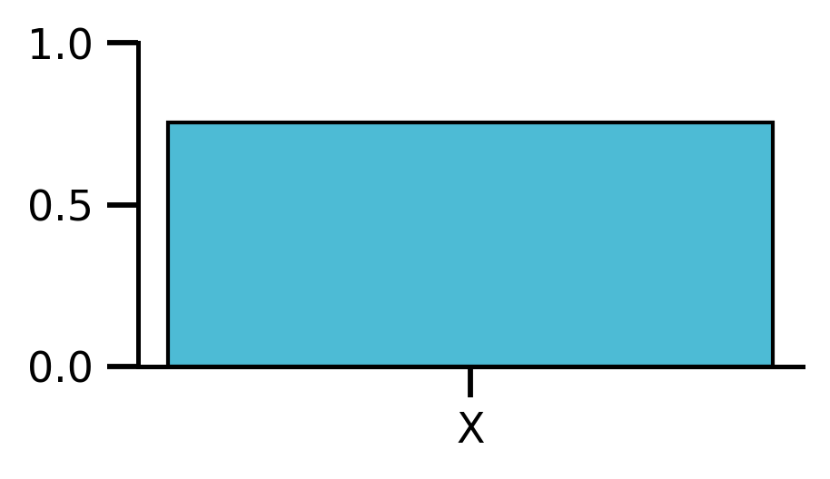
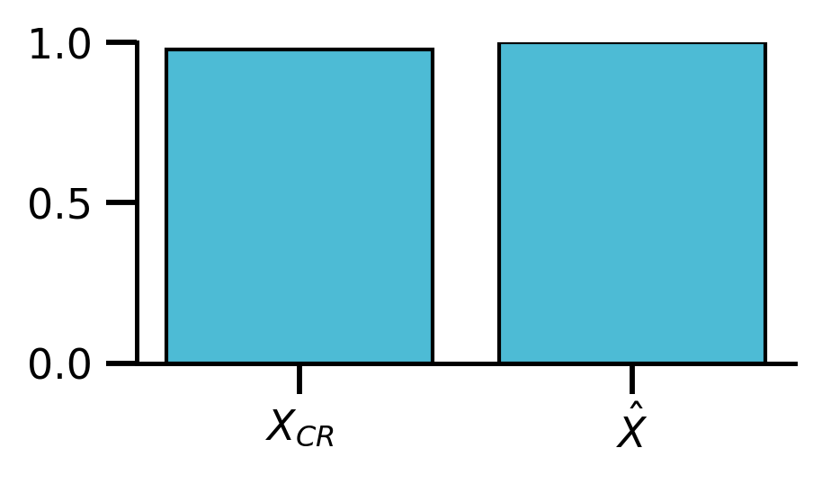
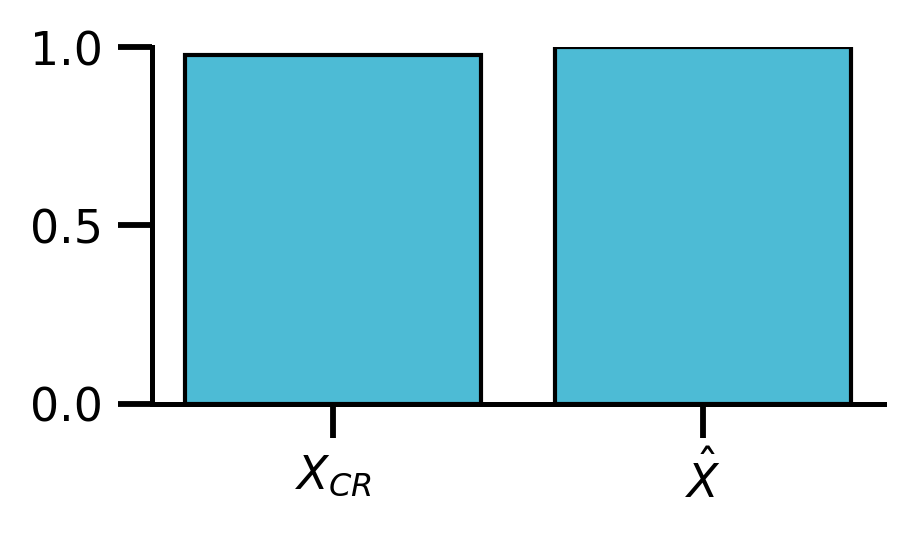

4a Walk Through Analyses with Binary TaCo
Contents
4a Walk Through Analyses with Binary TaCo¶
Imports & path variables etc
from pathlib import Path
import numpy as np
import pandas as pd
import matplotlib as mpl
import matplotlib.pyplot as plt
from sciplotlib import style
import seaborn as sns
from dtreeviz.trees import dtreeviz
from sklearn.model_selection import train_test_split
from sklearn.preprocessing import StandardScaler
from sklearn.tree import DecisionTreeClassifier, export_text
from sklearn.metrics import make_scorer, roc_auc_score
from julearn.transformers.confounds import DataFrameConfoundRemover
from PIL import Image
from cairosvg import svg2png
from leakconfound.analyses.utils import save_paper_val
from leakconfound.plotting import mm_to_inch
mpl.style.use(style.get_style('nature-reviews'))
mpl.rc('xtick', labelsize=11)
mpl.rc('ytick', labelsize=11)
mpl.rc('axes', labelsize=12, titlesize=12)
mpl.rc('figure', dpi=300)
mpl.rc('figure.subplot', wspace=mm_to_inch(4), hspace=mm_to_inch(7))
mpl.rc('lines', linewidth=1)
colors = ['#E64B35', '#4DBBD5', '#00A087', '#3C5488',
'#F39B7F', '#8491B4', '#91D1C2FF', '#DC0000',
'#7E6148', '#B09C85']
red = colors[0]
blue = colors[1]
green = colors[2]
purple = colors[5]
project_base = '../../'
out_base = f'{project_base}analyses/content/saved_figures/'
base_save_paper = "./paper_val/"
dt_colors = [
None, # 0 classes
None, # 1 class
[purple, green], # 2 classes
]
Define functions for plotting
def plot_scatter(x, y, df, threshold, ax=None, **kwargs):
if ax is None:
_, ax = plt.subplots()
sns.stripplot(x=x, y=y, data=df, orient="h", **kwargs, ax=ax,
edgecolor="w", linewidth=.05, palette=[purple, green]
)
ax.set_xlabel(f"{x}")
ax.set_ylabel("")
ax.legend(loc="upper right")
ax.axvline(x=threshold, color='grey', linestyle='--', lw=3)
ax.annotate(f"{threshold:.3f}", xy=(threshold, .01), xytext=(threshold, -0.045),
xycoords=ax.get_xaxis_transform(),
verticalalignment='top',
ha="center",
arrowprops=dict(arrowstyle="->", color="grey", linewidth=1),
bbox=dict(boxstyle="round", fc="w", color="grey"), fontsize=9,
weight="semibold"
)
def plot_discont(X, hue, data, left_lim, right_lim, colors=None, title=''):
palette = [purple, green] if colors is None else colors
y = hue
df_left = data.query(f'{X} < {left_lim[1]}').copy()
df_right = data.query(f'{X} > {right_lim[0]}').copy()
assert len(df_left) + len(df_right) == len(data)
fig, (ax1, ax2) = plt.subplots(1, 2, figsize=[10, 5], sharey=True)
fig.subplots_adjust(wspace=0.05)
fig.suptitle(title)
sns.stripplot(x=X, y=y,
data=df_left,
ax=ax1,
palette=palette,
orient="h",
edgecolor="w",
linewidth=.05
)
sns.stripplot(x=X, y=y,
data=df_right,
edgecolor="w",
orient="h",
linewidth=.05,
ax=ax2,
palette=palette)
ax1.axvline(x=left_lim[1], color='grey', linestyle='--', lw=3)
ax1.set_xlim(left_lim[0], left_lim[1])
ax1.spines.right.set_visible(False)
ax1.set_yticklabels([])
ax1.set_ylabel('')
ax1.tick_params(left=False)
# ax2
ax2.spines.left.set_visible(False)
ax2.yaxis.tick_left()
ax2.tick_params(left=False)
ax2.set_xlim(right_lim[0], right_lim[1])
d = 1.5 # proportion of vertical to horizontal extent of the slanted line
kwargs = dict(marker=[(-1, -d), (1, d)], markersize=12,
linestyle="none", color='k', mec='k', mew=1, clip_on=False)
ax1.plot([1], [0], transform=ax1.transAxes, **kwargs)
ax2.plot([0], [0], transform=ax2.transAxes, **kwargs)
# titles
ax1.set_xlabel('')
ax2.set_xlabel('')
return fig, (ax1, ax2)
Prepare data
np.random.seed(3240987)
auc_scorer = make_scorer(roc_auc_score)
df = pd.read_csv(f"{project_base}data/uci_datasets/bank.csv")
col_names = [col.split("__")[0] for col in df.columns.tolist()]
df.columns = col_names
X_train, X_test, y_train, y_test = train_test_split(
df.iloc[:, :-1], df.iloc[:, -1],
train_size=.7, stratify=df.iloc[:, -1])
Standardize, Shuffle, add Noise for Suppression
zscore = StandardScaler().fit(X_train, y_train)
X_train = pd.DataFrame(zscore.transform(X_train),
columns=col_names[:-1])
X_test = pd.DataFrame(zscore.transform(X_test),
columns=col_names[:-1]
)
zscore_shuffled = StandardScaler().fit(np.random.permutation(X_train), y_train)
X_train_shuffled = pd.DataFrame(zscore.transform(X_train),
columns=col_names[:-1])
X_test_shuffled = pd.DataFrame(zscore.transform(np.random.permutation(X_test)),
columns=col_names[:-1]
)
noise = np.random.normal(scale=2, size=(len(X_train), 1))
X_train_suppression = X_train + noise
zscore_supression_shuffled = StandardScaler().fit(
np.random.permutation(X_train_suppression), y_train)
x_train_suppression_shuffled = pd.DataFrame(zscore.transform(X_train),
columns=col_names[:-1]) + noise
X_train_suppression["noise__:type:__confound"] = noise
x_train_suppression_shuffled["noise__:type:__confound"] = noise
noise = np.random.normal(scale=2, size=(len(X_test), 1))
X_test_suppression = X_test + noise
X_test_suppression_shuffled = pd.DataFrame(
zscore.transform(np.random.permutation(X_test)),
columns=col_names[:-1]
) + noise
X_test_suppression["noise__:type:__confound"] = noise
X_test_suppression_shuffled["noise__:type:__confound"] = noise
Remove TaCo¶
# Apply TaCo
def prep_taco(X, y):
return X.copy().assign(**{
"TaCo__:type:__confound": y.values}
)
CR = DataFrameConfoundRemover().fit(prep_taco(X_train, y_train))
CR_shuffled = DataFrameConfoundRemover().fit(prep_taco(X_train_shuffled, y_train))
CR_suppression = DataFrameConfoundRemover().fit(X_train_suppression, y_train)
CR_suppression_shuffled = DataFrameConfoundRemover().fit(x_train_suppression_shuffled, y_train)
X_train_TaCo = CR.transform(prep_taco(X_train, y_train))
y_train_TaCo = y_train.reset_index(drop=True)
X_test_TaCo = CR.transform(prep_taco(X_test, y_test))
y_test_TaCo = y_test.reset_index(drop=True)
X_train_TaCo_shuffled = CR_shuffled.transform(prep_taco(X_train_shuffled, y_train))
X_test_TaCo_shuffled = CR_shuffled.transform(prep_taco(X_test_shuffled, y_test))
X_train_CR_suppression = CR_suppression.transform(X_train_suppression)
X_test_CR_suppression = CR_suppression.transform(X_test_suppression)
x_train_CR_suppression_shuffled = CR_suppression_shuffled.transform(x_train_suppression_shuffled)
X_test_CR_suppression_shuffled = CR_suppression_shuffled.transform(X_test_suppression_shuffled)
Model and Score
print("original features")
dt_raw = DecisionTreeClassifier(max_depth=2).fit(X_train, y_train)
score_X = auc_scorer(dt_raw, X_test, y_test)
print("Raw", score_X)
save_paper_val(base_save_paper, "walk_through_binary", "raw",
"dt.txt", round(score_X, 2))
dt_taco = DecisionTreeClassifier(max_depth=2).fit(X_train_TaCo, y_train_TaCo)
score_Xcr = auc_scorer(dt_taco, X_test_TaCo, y_test_TaCo)
print("TaCo", score_Xcr)
save_paper_val(base_save_paper, "walk_through_binary", "removed",
"dt.txt", round(score_Xcr, 2))
save_paper_val(base_save_paper,
"walk_through_bianry",
"raw_v_rem",
"median_pearsonr.txt",
X_train.corrwith(X_train_TaCo).median()
)
original features
Raw 0.7539511494252874
TaCo 0.978448275862069
print("shuffled")
dt_raw_shuff = DecisionTreeClassifier(max_depth=2).fit(X_train_shuffled, y_train)
score_X_shuff = auc_scorer(dt_raw_shuff, X_test_shuffled, y_test)
print("Raw", score_X_shuff)
save_paper_val(base_save_paper, "walk_through_binary", "raw",
"dt_shuffled.txt", round(score_X_shuff, 2))
dt_taco_shuff = DecisionTreeClassifier(max_depth=2).fit(
X_train_TaCo_shuffled, y_train_TaCo)
score_X_rem_shuff = auc_scorer(dt_taco_shuff, X_test_TaCo_shuffled, y_test_TaCo)
print("TaCo", score_X_rem_shuff)
save_paper_val(base_save_paper, "walk_through_binary", "removed",
"dt_shuffled.txt", round(score_X_rem_shuff, 2))
shuffled
Raw 0.5204741379310345
TaCo 0.9849137931034483
print("suppression")
dt_raw_sup = DecisionTreeClassifier(max_depth=2).fit(X_train_suppression, y_train)
score_X_sup = auc_scorer(dt_raw_sup, X_test_suppression, y_test)
print("Raw", score_X_sup)
save_paper_val(base_save_paper, "walk_through_binary", "raw",
"dt_suppression.txt", round(score_X_sup, 2))
dt_sup = DecisionTreeClassifier(max_depth=2).fit(
X_train_CR_suppression, y_train_TaCo)
score_X_sup_rem = auc_scorer(dt_sup, X_test_CR_suppression, y_test)
print("CR: Suppression", score_X_sup_rem)
save_paper_val(base_save_paper, "walk_through_binary", "removed",
"dt_suppression.txt", round(score_X_sup_rem, 2))
suppression
Raw 0.6580459770114943
CR: Suppression 0.7553879310344828
print("shuffled suppression")
dt_raw_sup_shuff = DecisionTreeClassifier(max_depth=2).fit(x_train_suppression_shuffled, y_train)
score_X_sup_shuff = auc_scorer(dt_raw_sup_shuff, X_test_suppression_shuffled, y_test)
print("Raw", score_X_sup_shuff)
save_paper_val(base_save_paper, "walk_through_binary", "raw",
"dt_suppression_shuffled.txt", round(score_X_sup_shuff, 2))
dt_sup_shuff = DecisionTreeClassifier(max_depth=2).fit(
x_train_CR_suppression_shuffled, y_train_TaCo)
score_X_sup_rem_shuff = auc_scorer(dt_sup_shuff, X_test_CR_suppression_shuffled, y_test)
print("CR: Suppression", score_X_sup_rem_shuff)
save_paper_val(base_save_paper, "walk_through_binary", "removed",
"dt_suppression_shuffled.txt", round(score_X_sup_rem_shuff, 2))
shuffled suppression
Raw 0.48994252873563215
CR: Suppression 0.4913793103448275
Looking at the Decision Trees
viz_raw = dtreeviz(dt_raw,
X_test, y_test,
target_name='Subscribed to Deposit',
feature_names=col_names[:-1],
histtype='strip', scale=4,
colors={'classes': dt_colors},
class_names={0: 'no', 1: 'yes'},
)
viz_raw.save(f'{out_base}dt_raw_bank.svg')
viz_taco = dtreeviz(dt_taco,
X_test_TaCo, y_test_TaCo,
target_name='Subscribed to Deposit',
feature_names=col_names[:-1],
histtype='strip', scale=4,
colors={'classes': dt_colors},
class_names={0: 'no', 1: 'yes'},
)
viz_taco.save(f'{out_base}dt_taco_bank.svg')
idx = (X_test_TaCo
.index)
df_TaCo_plot = (X_test_TaCo
.assign(y=y_test_TaCo.values)
.loc[idx, :].reset_index(drop=True)
)
findfont: Font family ['Arial'] not found. Falling back to DejaVu Sans.
findfont: Font family ['Arial'] not found. Falling back to DejaVu Sans.
findfont: Font family ['Arial'] not found. Falling back to DejaVu Sans.
findfont: Font family ['Arial'] not found. Falling back to DejaVu Sans.
Detailed Look At Decions Tree Notes¶
Before Removal¶
svg2png(file_obj=open(f"{out_base}dt_raw_bank.svg", "rb"),
write_to=f"{out_base}dt_raw_bank.png")
svg2png(file_obj=open(f"{out_base}dt_taco_bank.svg", "rb"),
write_to=f"{out_base}dt_taco_bank.png")
idx = (X_test.sample(300, random_state=185123).index
)
df_test_plot = (X_test.assign(y=y_test.values).iloc[idx, :]
.rename(columns=dict(euribor3m="euribor",
nr_employed="number of employees"))
)
# thresholds from here:
print(export_text(dt_raw, X_test.columns.to_list()))
fig, ax = plt.subplots()
threshold = -.51
plot_scatter(x="duration", y="y",
df=df_test_plot,
threshold=threshold, ax=ax)
# ax.set_xlim(-.1, 1)
ax.set_title('Duration')
# ax.axvspan(-.1, threshold, color=green, alpha=.2)
# ax.axvspan(threshold, 1, color=purple, alpha=.2)
ax.set_yticklabels([])
ax.set_ylabel('')
fig.savefig(f"{out_base}/dt_raw_duration.png")
fig.savefig(f"{out_base}/dt_raw_duration.svg")
fig, ax = plt.subplots()
threshold = -0.56
plot_scatter(x="number of employees", y="y",
df=df_test_plot,
threshold=threshold, ax=ax)
ax.set_title('Number of employees')
ax.set_xlim(-2, 1.2)
ax.axvspan(-2, threshold, color=green, alpha=.2)
ax.axvspan(threshold, 1.2, color=purple, alpha=.2)
ax.set_yticklabels([])
ax.set_ylabel('')
fig.savefig(f"{out_base}/dt_raw_nremployed.png")
fig.savefig(f"{out_base}/dt_raw_nremployed.svg")
/home/sam/Projects/LeakConfound/.venv/lib/python3.10/site-packages/sklearn/utils/validation.py:70: FutureWarning: Pass feature_names=['age', 'job', 'marital', 'education', 'default', 'housing', 'loan', 'contract', 'month', 'day_of_week', 'duration', 'campaign', 'previous', 'poutcome', 'emp_var_rate', 'cons_price_idx', 'cons_conf_idx', 'euribor3m', 'nr_employed'] as keyword args. From version 1.0 (renaming of 0.25) passing these as positional arguments will result in an error
warnings.warn(f"Pass {args_msg} as keyword args. From version "
No artists with labels found to put in legend. Note that artists whose label start with an underscore are ignored when legend() is called with no argument.
|--- duration <= -0.51
| |--- nr_employed <= -0.56
| | |--- class: 1
| |--- nr_employed > -0.56
| | |--- class: 0
|--- duration > -0.51
| |--- euribor3m <= -0.03
| | |--- class: 1
| |--- euribor3m > -0.03
| | |--- class: 1
No artists with labels found to put in legend. Note that artists whose label start with an underscore are ignored when legend() is called with no argument.
fig, ax = plt.subplots()
threshold = -0.03
plot_scatter(x="euribor", y="y",
df=df_test_plot,
threshold=threshold, ax=ax,
)
ax.set_title('Euribor')
ax.set_xlim(-.1, 1)
ax.axvspan(-.1, threshold, color=green, alpha=.2)
ax.axvspan(threshold, 1, color=green, alpha=.2)
ax.set_yticklabels([])
ax.set_ylabel('')
fig.savefig(f"{out_base}/dt_raw_euribor.png")
fig.savefig(f"{out_base}/dt_raw_euribor.svg")
img_raw = Image.open(f'{out_base}dt_raw_bank.png', 'r')
img_taco = Image.open(f'{out_base}dt_taco_bank.png', 'r')
No artists with labels found to put in legend. Note that artists whose label start with an underscore are ignored when legend() is called with no argument.
After TaCo Removal¶
fig, (ax1, ax2) = plot_discont('loan', "y",
df_TaCo_plot, (-.47, -.445), (0.76, 2.5),
colors=[purple, green],
title='Loan'
)
ax1.axvline(x=-.453, color='grey', linestyle='--', lw=3)
ax1.xaxis.set_major_locator(mpl.ticker.MultipleLocator(.01))
ax1.axvspan(-.48, -.453, color=green, alpha=.2)
ax1.axvspan(-.453, -.39, color=purple, alpha=.2)
ax2.axvspan(.76, 2.5, color=purple, alpha=.2)
ax1.tick_params(axis='both', which='major', labelsize=9)
ax2.tick_params(axis='both', which='major', labelsize=9)
ax1.annotate("-0.453", xy=(-.453, .01), xytext=(-.453, -0.045),
xycoords=ax1.get_xaxis_transform(),
verticalalignment='top',
ha="center",
arrowprops=dict(arrowstyle="->", color="grey", linewidth=1),
bbox=dict(boxstyle="round", fc="w", color="grey"), fontsize=9,
weight="semibold"
)
fig.savefig(f"{out_base}/dt_taco_loan.svg")
fig.savefig(f"{out_base}/dt_taco_loan.png")

fig2, (ax12, ax22) = plot_discont('default', "y", df_TaCo_plot,
(-.7, -.11), (2.01, 2.5),
colors=[purple, green],
title='Default'
)
ax12.xaxis.set_major_locator(mpl.ticker.MultipleLocator(.3))
ax12.axvline(x=-.439, color='grey', linestyle='--', lw=3)
ax12.axvspan(-.7, -.439, color=green, alpha=.2)
ax12.axvspan(-.439, -.11, color=purple, alpha=.2)
ax22.axvspan(2.01, 2.5, color=purple, alpha=.2)
ax12.tick_params(axis='both', which='major', labelsize=9)
ax22.tick_params(axis='both', which='major', labelsize=9)
ax12.annotate("-0.439", xy=(-.439, .01), xytext=(-.439, -0.045),
xycoords=ax12.get_xaxis_transform(),
verticalalignment='top',
ha="center",
arrowprops=dict(arrowstyle="->", color="grey", linewidth=1),
bbox=dict(boxstyle="round", fc="w", color="grey"), fontsize=9,
weight="semibold"
)
fig2.savefig(f"{out_base}/dt_taco_default.svg")
fig2.savefig(f"{out_base}/dt_taco_default.png")

Compute, model and score on Xhat
# Score plots
est_removal = CR.models_confound_
X_hat_train = (
est_removal.apply(
lambda model: model.predict(y_train.values.reshape(-1, 1)))
.pipe(
lambda df: pd.DataFrame({row: col for row, col in df.iteritems()}))
)
X_hat_test = (
est_removal.apply(
lambda model: model.predict(y_test.values.reshape(-1, 1)))
.pipe(
lambda df: pd.DataFrame({row: col for row, col in df.iteritems()}))
)
X_hat_train.index = X_train.index
X_hat_test.index = X_test.index
dt_Xhat = (DecisionTreeClassifier(max_depth=2)
.fit(X_hat_train, y_train))
score_Xhat = dt_Xhat.score(X_hat_test, y_test)
save_paper_val(base_save_paper, "walk_through_binary", "removed",
"dt_Xhat.txt", score_Xhat)
print("Xhat scored:", score_Xhat)
Xhat scored: 1.0
Plotting
train_hight = len(X_train)/len(df)
test_hight = 1 - train_hight
fig_grid = fig = plt.figure(figsize=(25, 20))
# Preparig axis according to
axd = {
name: plt.subplots(figsize=[mm_to_inch(80), mm_to_inch(40)])[1]
for name in list("ABCDFGHIEKJL")
}
# Score X
axd['K'].bar(["X"], [score_X], color=blue)
axd["K"].set_ylim(0, 1)
axd['L'].bar([r"$X_{CR}$", r"$\hat{X}$"], [score_Xcr, score_Xhat], color=blue)
axd["L"].set_ylim(0, 1)
(0.0, 1.0)
<Figure size 7500x6000 with 0 Axes>
 



 

 

# Styling
# Remove feature names, index from most plots
important_raw_features = dt_raw.feature_importances_ > 0
tick_important_raw_features = np.arange(len(important_raw_features))[important_raw_features]
names_important_raw_features = np.array(col_names[:-1])[important_raw_features]
important_removed_features = dt_taco.feature_importances_ > 0
tick_important_removed_features = np.arange(len(important_removed_features))[
important_removed_features]
names_important_removed_features = np.array(col_names[:-1])[important_removed_features]
idx_train = np.argsort(y_train)
idx_test = np.argsort(y_test)
cols = [col for col in col_names
if col in names_important_raw_features or col in names_important_removed_features]
heats = [X_train.iloc[idx_train, :][cols], y_train.values[idx_train].reshape(-1, 1),
X_train_TaCo.iloc[idx_train, :][cols], y_train_TaCo.values[idx_train].reshape(-1, 1),
X_test.iloc[idx_test, :][cols], y_test.values[idx_test].reshape(-1, 1),
X_test_TaCo.iloc[idx_test, :][cols], y_test_TaCo.values[idx_test].reshape(-1, 1),
]
for heat, ax_label in zip(heats, list("ABCDFGHI")):
if ax_label in list('BDGI'):
cmap = "gray"
kwargs = dict()
else:
cmap = "coolwarm"
kwargs = dict(center=0, vmin=-3, vmax=3, cmap=cmap,)
sns.heatmap(
heat, cbar=False,
**kwargs,
ax=axd[ax_label])
for ax_name, ticks, names in zip(list("FH"),
[tick_important_raw_features, tick_important_removed_features],
[names_important_raw_features, names_important_removed_features]
):
axd[ax_name].yaxis.set_visible(False)
for ax_name in list("BDI"):
axd[ax_name].xaxis.set_visible(False)
for ax_name in list("ABCDEGIJ"):
axd[ax_name].xaxis.set_visible(False)
axd[ax_name].yaxis.set_visible(False)
walk_through_path = f'{out_base}/walk_through_composition/'
Path(walk_through_path).mkdir(exist_ok=True, parents=True)
for name, ax in axd.items():
if name in list("JE"):
ax.get_figure().savefig(walk_through_path + name + ".svg")
ax.get_figure().savefig(walk_through_path + name + ".png")